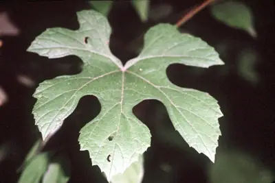

pranet · 出典付きの植物図鑑
summer grape
Vitis aestivalis Michx. · Vitaceae

Vitis aestivalis, the summer grape, or pigeon grape is a species of grape native to eastern North America from southern Ontario east to Maine, west to Oklahoma, and south to Florida and Texas. It is a vigorous vine, growing to 10 m (33 ft) or more high on trees. The leaves are 7–20 cm (2.8–7.9 in) long, suborbicular, and usually a little broader than long; they are variable in shape, from unlobed to deeply three- or five-lobed, green above, and densely hairy below. The flowers are produced at every third node in a dense panicle 5–15 cm long. The fruit is a small grape 5–14 mm (0.20–0.55 in) diameter, dark purple or black in colour. It is the official state grape of Missouri. Summer grape prefers a drier upland habitat.
出典: Wikipedia (en): Vitis aestivalis · CC BY-SA 4.0
異名: Vitis americana W.Bartram, Vitis argentifolia Munson ex House, Vitis bicolor Leconte, Vitis bicolor Raf., Vitis bifida Raf., Vitis bourquiniana (L.H.Bailey) Munson ex G.Nicholson, Vitis diversifolia W.R.Prince, Vitis fulva Raf., Vitis glareosa Raf., Vitis intermedia Muhl., Vitis labruscoides Muhl., Vitis lecontiana House, Vitis linsecomii Buckley, Vitis multiloba Raf., Vitis rufotomentosa Small, Vitis saxatilis Raf., Vitis serotina Raf., Vitis sinuata (Pursh) G.Don, Vitis smalliana L.H.Bailey, Vitis ursina Raf.
同定や利用は自己責任でお願いします。この図鑑だけを根拠に野生の植物を食べないでください。
出典
- 学名: World Flora Online Plant List 2026-06 · CC0 1.0
- 名前: Wikipedia の記事名と Wikidata · CC0 1.0（Wikidata）。記事名は事実
- 説明: Wikipedia (en): Vitis aestivalis · CC BY-SA 4.0
- 食用・毒性: World Checklist of Useful Plant Species (Diazgranados et al. 2020, RBG Kew) · CC BY 4.0
- 分布: World Checklist of Vascular Plants (WCVP), RBG Kew, version 2026-06-04 · CC BY 3.0
このページは pranet のデータから自動生成しています。コードは MIT、データは項目ごとのライセンス（説明）。